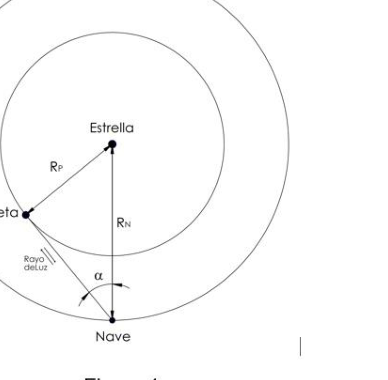
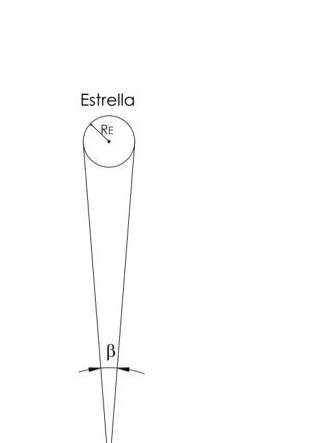

Atrapado en el espacio
PT145. Escuela Philips Ciudad Autónoma de Buenos Aires.
Atrapado en el espacio Año 2167. El intrépido e inteligente astronauta Tomás despierta de su cámara criogénica en la cual había dormido por varios años, a bordo de su nave espacial, La Renassance. Tomás se encuentra actualmente solo en una misión espacial para recolectar información de galaxias lejanas. Sin embargo, al despertar y ver los registros de la nave se da cuenta de que se ha desviado de su curso original y ha caído en órbita en una estrella desconocida. Con la ayuda de su nave, Tomás debe encontrar la manera de escapar del campo gravitatorio que lo mantiene en órbita, para poder continuar con su misión.
Parte 1: Recolección de datos Al darse cuenta de que esta estrella tiene un pequeño planeta orbitando a un radio menor que el de él, lo primero que decide hacer es calcular su propio radio orbital. Para ello espera hasta el momento justo y manda un haz de luz hacia el planeta, en la misma dirección en la que se mueve el planeta en ese momento, lo que puede determinarse con los sensores de la nave. El haz rebota en el planeta y es absorbido por el sensor de la nave un tiempo t1=5 min después. En este momento, Tomás observa que la distancia angular entre el planeta y la estrella es = . La situación se muestra en la Figura 1 (no a escala).
100 - OAF 2019 a) Con los datos dados y sabiendo que la velocidad de la luz en el vacío es constante y vale c = 299792458 m/s, calcular el radio orbital de la nave y del planeta. b) Habiendo observado (con la debida protección), que desde la nave la estrella abarca una región angular =, como se ve en la figura 2, calcular el radio de la estrella, que Tomás cree le puede ser útil en algún momento.
Para poder planear su escape, Tomás necesita saber también
la masa de la estrella. Para esto decide aprovechar la tercera
ley de Kepler y medir su periodo de giro. Pero al no poder
encontrar una buena referencia para determinar cuando dio una
vuelta, decide en su lugar medir el tiempo que hay entre la
primera y segunda vez que se cruza con el planeta, siendo este
tiempo te=240 días aproximadamente.
c) Considerando que todos los movimientos ocurren en un mismo plano y que tanto
el planeta como la nave orbitan en sentido de giro horario, calcular la masa de la
estrella.
Parte 2: el escape
d) Con los datos hallados, calcular la velocidad necesaria de la nave para escapar
el campo gravitatorio de la estrella, esto es, la velocidad de escape. Tome
ME = 1.72x1031kg si no pudo resolver el punto c).
Ahora que Tomás sabe la velocidad a la que tiene que ir para escapar, quiere saber cuánta energía necesita para llegar a esa velocidad. El principio básico de los propulsores de la nave es expulsar una gas a alta velocidad, para así aumentar la velocidad de la nave en la dirección opuesta (puede pensarlo como un choque explosivo donde ambas masas, la nave y el gas, comienzan juntas y se separan en direcciones opuestas). La masa de La Renassance es M=500.000 kg (sin contar el gas que se expulsará) y la masa máxima de gas que se puede propulsar es m =1000 kg. Asuma que los propulsores pueden acelerar casi instantáneamente el gas hasta cualquier velocidad (siempre y cuando sea menor que la velocidad de la luz, obviamente). e) Calcule la energía necesaria para que la nave llegue a la velocidad de escape. Tome Vesc =160 km/s si no pudo resolver el punto d).
Parte 3: La energía
La nave espacial tiene capacidad suficiente para almacenar la energía necesaria, pero
necesita cargar sus baterías por medio de 10 paneles solares de área A=100m3. Para
saber cuánto tiempo necesita para que se carguen lo suficiente, lo primero que hace
Tomás es determinar la temperatura de la estrella, usando la ley de desplazamiento de
Wein, que relaciona la temperatura de un objeto con la longitud de onda preferencial que
emite, de la siguiente manera:
𝜆= 𝑏
𝑇
Donde b = 2.898x10−3 m⋅K es la constante de desplazamiento de Wein.
f) Los sensores de la nave marcan una longitud de onda preferencial de =300 nm.
Calcular la temperatura de la estrella.
g) Calcular la potencia de radiación que le llega a los paneles solares. Suponga
una emisividad de 1 para la estrella y una absorción de 1 para los paneles.
h) Los paneles se posicionan de manera que la potencia del punto anterior es
constante. Calcule el tiempo necesario para obtener la energía suficiente para
escapar del campo gravitatorio de la estrella.
OAF 2019- 101 Notas
- Considere en todo momento orbitas circulares.
- Considere la nave, el planeta y la estrella como masas puntuales
- Desprecie en todo momento el efecto gravitatorio del planeta.
- Durante el “choque explosivo” se puede despreciar también la contribución de la gravedad de la estrella.
- En el punto a), se puede despreciar el movimiento orbital desde que se emitió hasta que se absorbió el haz de luz.
- Constante de gravitación de Newton: G = 6.674 ×10−11 N⋅m2/kg2
- Constante de Stefan-Boltzmann: = 5.67 × 10−8 W/(m2⋅K4)
- No se preocupe, Tomás tiene suficiente aire, agua y comida para sobrevivir el tiempo necesario.


Topic: Gravitation, Astrophysics Metodi: Kepler’s Laws, Newton’s Law of Gravitation, Conservation of Momentum Competenze: Physical Reasoning, Mathematical Modeling Objects: Satellite, Star, Planet Fonte: Testo (PDF) — p.116
Cattrappo nello spazio
PT145. Philips School Città autonoma di Buenos Aires.
Trapianto nello spazio L’anno 2167. L’ intrepidissimo e intelligente astronauta Tomás si sveglia dalla sua camera criogenica . dove aveva dormito per diversi anni, a bordo della sua nave spaziale, La Renaissance. Tomás è attualmente solo in una missione spaziale per raccogliere informazioni. di galassie lontane. Tuttavia, svegliandosi e vedendo i registri della nave si rende conto che si è allontanato dal suo corso originario e è caduto in orbita su una stella. sconosciuta. Con l’aiuto della sua nave, Tom deve trovare un modo per scappare dal campo gravitazionale che lo mantiene in orbita, in modo da poter continuare la sua missione.
Parte 1: Raccogliere i dati Scoprendo che questa stella ha un piccolo pianeta orbitando su un raggio inferiore al La prima cosa che decide di fare è calcolare il suo la propria radio orbitale. Per questo aspetta fino al Giusto momento e manda un raggio di luce verso il pianeta, nella stessa direzione in cui si muove il pianeta in quel momento, che può
- per determinare con i sensori della nave. Il fascio Ribetta sul pianeta ed è assorbito dal sensore di la nave un tempo t1=5 minuti dopo. In questo . momento, Tom osserva che la distanza angolare tra il pianeta e la stella è = . La situazione La figura 1 (non a scala)
100 - OAF 2019 a) Con i dati dati dati e sapendo che la velocità della la luce nel vuoto è costante e vale c = 299792458 m/s, Calcolare il raggio orbitale della nave e del pianeta. b) Avendo osservato (con la dovuta protezione) che Dal veicolo la stella si estende in una regione angolare =, come si vede in figura 2, calcolare il raggio di Stella, che Tom crede possa essere utile a lui in qualche modo Un momento.
Per poter pianificare la sua fuga, Tom deve sapere anche. la massa della stella. Per questo decide di sfruttare la terza. Legge di Kepler e misura il suo periodo di rotazione. Ma non potendo trovare un buon riferimento per determinare quando ha dato una Ritorna, decide invece di misurare il tempo che c’è tra la La prima e la seconda volta che si incrocia con il pianeta, essendo questo tempo te=circa 240 giorni. c) considerando che tutti i movimenti si svolgono nello stesso piano e che tanto Il pianeta come la nave orbita in senso orario, calcolare la massa della
- La star.
Parte 2: la fuga d) Con i dati ottenuti, calcolare la velocità necessaria alla nave per fuggire il campo gravitazionale della stella, cioè la velocità di fuga. Prendi . ME = 1,72x1031kg se non è riuscito a risolvere il punto c).
Ora che Tom sa a che velocità deve andare per scappare, vuole sapere quanta energia serve per raggiungere questa velocità. Il principio fondamentale dei La spinta della nave è di espellere un gas ad alta velocità, aumentando così la velocità di velocità della nave in direzione opposta (potete pensarci come un colpo esplosivo) dove entrambe le masse, la nave e il gas, iniziano insieme e si separano in direzioni. opposti). La massa di La Renaissance è M=500.000 kg (non contando il gas che viene La massa massima di gas che può essere propulsa è m = 1000 kg. Supponi che I propulsori possono accelerare quasi istantaneamente il gas a qualsiasi velocità. (se è inferiore alla velocità della luce, ovviamente). e) Calcolare l’energia necessaria per raggiungere la velocità di scarico della nave. Prendi Vesc =160 km/s se non riesci a risolvere il punto d).
Parte 3: Energia La nave spaziale ha abbastanza capacità per memorizzare l’energia necessaria, ma ha bisogno di caricare le sue batterie tramite 10 pannelli solari di superficie A=100m3. Per sapere quanto tempo ci vuole per caricare abbastanza, la prima cosa che fa Tomás è determinare la temperatura della stella, usando la legge di spostamento di Wein, che relaziona la temperatura di un oggetto con la lunghezza d’onda preferenziale che emette, come segue: 𝜆= 𝑏 𝑇 Dove b = 2.898x10−3 m⋅K è la costante di spostamento di Wein. f) I sensori della nave segnano una lunghezza d’onda preferenziale di =300 nm. Calcolare la temperatura della stella. g) Calcolare la potenza di radiazione che raggiunge i pannelli solari. Supponiamo che un’emissività di 1 per la stella e un’assorbimento di 1 per i pannelli. h) I pannelli sono posizionati in modo che la potenza del punto precedente sia costante. Calcola il tempo necessario per ottenere energia sufficiente per Scappa dal campo gravitazionale della stella.
OAF 2019- 101 Notte
- Considera in ogni momento le orbite circolari.
- Considerate la nave, il pianeta e la stella come masse puntate.
- Smettila di disprezzare l’effetto gravitazionale del pianeta.
- Durante lo shock esplosivo si può disprezzare anche il contributo della la gravità della stella.
- In punto a) si può disprezzare il movimento orbitale da quando è stato emesso finché non si assorbi il raggio di luce.
- Costante di gravitazione di Newton: G = 6.674 ×10−11 N⋅m2/kg2
- Costante di Stefan-Boltzmann: = 5.67 × 10−8 W/(m2⋅K4)
- Non preoccuparti, Tom ha abbastanza aria, acqua e cibo per sopravvivere al tempo necessario.
Topic: Gravitation, Astrophysics Metodi: Kepler’s Laws, Newton’s Law of Gravitation, Conservation of Momentum Competenze: Physical Reasoning, Mathematical Modeling Objects: Satellite, Star, Planet Fonte: Testo (PDF) — p.116
Trapped in space
PT145. Philips School The Autonomous City of Buenos Aires.
Trapped in space . The year is 2167. The fearless and intelligent astronaut Thomas wakes up from his cryogenic chamber . In which he had slept for several years, aboard his spaceship, the Renaissance. Tom is currently on a space mission alone to gather information. of distant galaxies. However, upon waking up and seeing the ship’s records, he realizes It’s gone off course and has fallen into orbit on a star. Unknown. With the help of his ship, Thomas must find a way to escape from the gravitational field that keeps it in orbit, so it can continue its mission.
Part 1: Data collection Realizing this star has a A small planet orbiting a radius smaller than the Earth . The first thing he decides to do is calculate his The orbiting radius itself. For that, wait till the Just moment and sends a beam of light towards the planet, in the same direction it moves. the planet at that time, what can to be determined by the ship’s sensors. The beam . It bounces off the planet and is absorbed by the Earth ‘s sensor . The ship a time t1=5 minutes later. In this one . Now, Thomas observes that the angular distance The distance between the planet and the star is =. The situation is shown in Figure 1 (not in scale).
The Commission shall adopt delegated acts in accordance with Article 21 of the Financial Regulation. (a) With the data given and knowing that the speed of the the light in the vacuum is constant and is c = 299792458 m/s, calculate the orbital radius of the spacecraft and the planet. (b) Having observed (with due protection) that: From the ship the star covers an angular region. =, as shown in Figure 2, calculate the radius of the Star, which Thomas believes may be useful to him at some point Just a moment.
To be able to plan his escape, Tom needs to know too. The mass of the star. For this he decides to take advantage of the third. Kepler’s law and measure its spin period. But I can ‘t . Find a good reference to determine when you gave a Turn around, decide instead to measure the time between the First and second time you’ve crossed the planet, being this one. The time t=240 days approximately. (c) Whereas all movements occur on the same plane and that both The planet as the ship orbits in a clockwise direction, calculating the mass of the The star.
Part 2: the escape (d) With the data found, calculate the speed required for the vessel to escape. the gravitational field of the star, that is, the escape velocity. Take it . ME = 1.72x1031kg if he could not solve point c).
Now that Tom knows how fast he has to go to escape, he wants to know. how much energy it needs to get to that speed. The basic principle of the The propellant of the ship is to expel a gas at high speed, thus increasing the The speed of the ship in the opposite direction (you can think of it as an explosive shock) where both masses, the ship and the gas, begin together and separate in directions. the opposite). The mass of the Renaissance is M=500,000 kg (not counting the gas being The maximum mass of gas that can be propelled is m = 1000 kg. Assume that The propellants can accelerate the gas almost instantly at any speed. (as long as it’s less than the speed of light, obviously). (e) Calculate the energy required to bring the craft to escape speed. Take Vesc =160 km/s if you couldn’t solve point d.
Part 3: Energy The spacecraft has enough capacity to store the necessary energy, but You need to charge your batteries through 10 solar panels with an area of A=100m3. For Knowing how long it takes to charge enough, the first thing you do. Tom is determining the temperature of the star, using the law of displacement of Wein, which relates the temperature of an object to the preferred wavelength that emits as follows: 𝜆= 𝑏 𝑇 Where b = 2.898x10−3 m⋅K is Wein’s displacement constant. (f) The vessel’s sensors shall indicate a preferential wavelength of =300 nm. Calculate the temperature of the star. (g) Calculate the radiation power reaching the solar panels. Suppose an emissivity of 1 for the star and an absorption of 1 for the panels. (h) The panels are positioned so that the power of the previous point is It’s constant. Calculate the time it takes to get enough energy to escape the gravitational field of the star.
The Commission shall adopt implementing acts in accordance with Article 21 of this Regulation. Notes
- Consider circular orbits at all times.
- Consider the ship, the planet and the star as point masses.
- He always despises the gravitational effect of the planet.
- During the explosive shock, the contribution of the gravity of the star.
- In point (a), you can disregard the orbital movement since it was issued. until the beam of light absorbed.
- Newton’s gravitational constant: G = 6.674 ×10−11 N⋅m2/kg2
- The Stefan-Boltzmann constant: = 5.67 × 10−8 W/(m2⋅K4)
- Don’t worry, Tom has enough air, water and food to survive the storm. time needed.
Topic: Gravitation, Astrophysics Metodi: Kepler’s Laws, Newton’s Law of Gravitation, Conservation of Momentum Competenze: Physical Reasoning, Mathematical Modeling Objects: Satellite, Star, Planet Fonte: Testo (PDF) — p.116